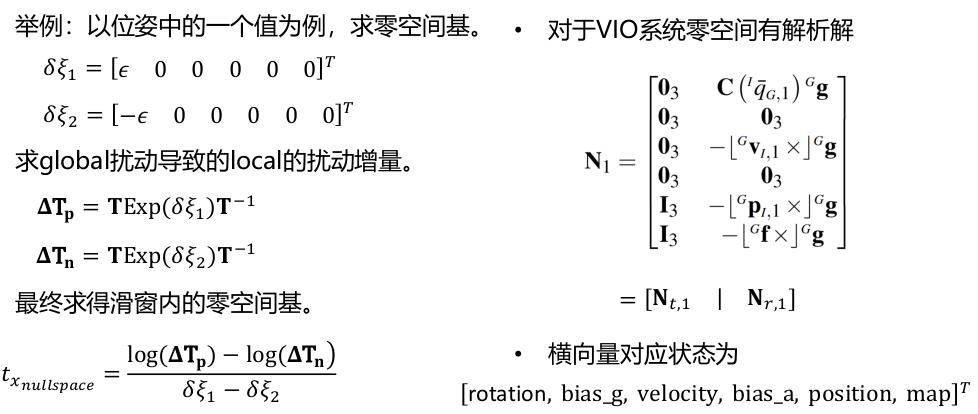

DSO
2022-01-25
1. 基础知识
光度误差
4. 划窗优化
4.2 零空间的处理
R,t,s都是不可观的，没有绝对的位姿
\[\begin{split}&Hx=b\\
&Hx_{ns}=0\\
&H(x+x_{ns})=b\end{split}\]
求零空间基，将全局的零空间上的扰动变换到局部:
伴随: \(Exp(Ad_T \xi)=TExp(\xi)T^{-1}\)
左乘与右乘: \(T_{wc}Exp(\delta \xi_c)=Exp(\delta \xi_w)T_{wc}\)
则:左边是局部增量，右边是全局增量
\[\begin{split}&Exp(\delta \xi_c)=T_{cw}Exp(\delta \xi_w)T_{wc} \\
&\delta \xi_c=Ad_{T_{cw}}\delta \xi_w\end{split}\]

处理方法
- Gauge Fixation: 固定第一帧，即对应残差雅克比为0或者权重趋于无穷大
- Gauge Prior: 给状态设置先验[根据滑动去掉的帧给]，增加相应的惩罚项
- Free Prior: 自由演变，最后用第一帧拉回来
Todo
伪逆，增加阻尼(LM)
DOS的处理方法
- \(\Delta x\)投影到减去零空间的投影值，即为真实的\(\Delta x\)。[TODO]: 零空间的分量 \(P_Mv=N(N^TN)^{-1}N^Tv\)
4.3 DSO边缘化策略
先帧的位姿后地图点